Pitch
How high or low a sound seems. For a steady musical tone, pitch is closely related to its fundamental frequency, measured in hertz. Some sounds have no clear single pitch.
Listen for: a low note followed by a higher note at a similar loudness.
03 / PROTOTYPES
An example of what a teacher actually teaches, alongside the character and classroom studies that bring the school to life.
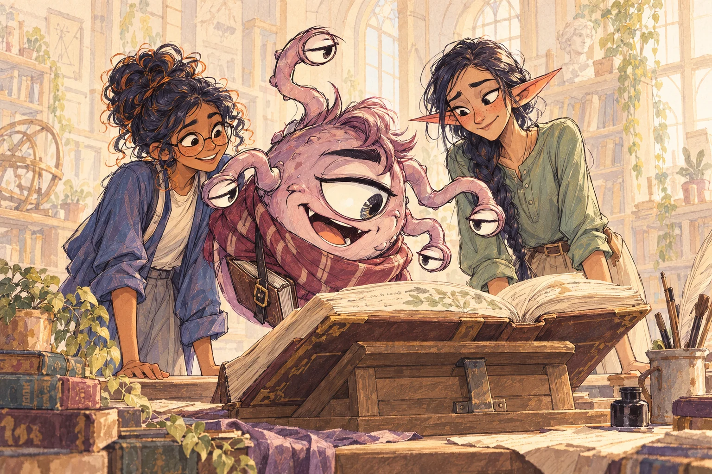
EXAMPLE LESSON / MUSIC / WEEK 1
UNIT 1.1 First day · approximately 30 minutes
How can we describe what we hear, and how can a musician use those qualities intentionally?
The Goblin Bard introduces the properties of sound through explanation, listening demonstrations and close observation. Students learn the vocabulary, apply it to what they hear, and explain their observations.
See what the other teachers teach
FIRST, THE EXPLANATION
Learn the difference between high and loud, short and sustained, and the character of a sound.
How high or low a sound seems. For a steady musical tone, pitch is closely related to its fundamental frequency, measured in hertz. Some sounds have no clear single pitch.
Listen for: a low note followed by a higher note at a similar loudness.
How loud or soft a sound seems. Amplitude describes the strength of a vibration; our perception of loudness is also influenced by frequency and duration.
Listen for: the same recorded note played softly, then louder. Its pitch stays the same.
How long a sound lasts. Describe it in seconds or as short and sustained. Duration describes a sound’s length; tempo describes the rate of a musical beat.
Listen for: a brief note compared with a sustained version of that note.
The quality that distinguishes sounds with similar pitch and loudness. It comes from their frequency content and the way they begin, develop and fade.
Listen for: a violin and a flute playing the same note, with different tone colors.
Sit quietly for three minutes and catalog the ambient sounds you hear. Record their pitch and duration, then add observations about loudness and timbre.
Use “no clear pitch” when high or low does not describe the sound well. Record what you actually hear; exact frequency measurements are not required.
THE TEACHER ASKS
“Which sound was continuous? Which had a clear pitch? What did you hear that supports your description?”
Then discuss how an artist could arrange two of these sounds using repetition, contrast or layering.
AN EXAMPLE OBSERVATION SHEET
| Sound | Pitch | Duration | Loudness | Timbre |
|---|---|---|---|---|
| Ventilation | Low / no clear single pitch | Continuous | Soft | Airy, diffuse |
| Footsteps outside | No clear single pitch | Short, repeated | Moderate | Dull, hollow |
| Bird outside | Relatively high | Short, intermittent | Soft | Bright, whistling |
One sounding pitch. Four instruments.
What makes each sound distinct?
Compare the exact same note in the same octave on a violin, synthesizer, flute and distorted guitar. Keep duration and perceived loudness as similar as practical, so the comparison focuses on tone color.
Lesson outline · the four instrument recordings are still to be added.
Notice the start of each note, its sustained sound and how it fades. Describe what you hear: breathy, smooth, rough, bright, rounded or sharp-edged.
Use words, lines, shapes or colors to represent each example. Explain one placement. Your visual associations are personal; they are not acoustic measurements.
What stayed approximately constant? What changed? Why might a composer choose one of these sounds for a particular passage?
A shared fundamental pitch can have different overtones and attack/decay. A synthesizer has many possible timbres; the chosen patch is one example.
CHECK FOR UNDERSTANDING
Students answer in writing or speech. The teacher checks the reasoning and returns to a demonstration when a distinction is unclear.
Higher describes pitch; louder describes loudness. A note can become louder without becoming higher.
Timbre: their frequency content and the way the sound begins, develops and fades can differ. Support the explanation with a detail from the listening examples.
Identify the sound and describe its pitch and duration. “No clear pitch” is valid when supported by the observation.
Yes. Explain how a composer could use that sound intentionally through timing, repetition, contrast or layering.
CONTINUE THROUGH WEEK 1
Later lessons examine frequency and amplitude through simple waveforms, explore timbre through attacks and overtones, and apply the vocabulary to an annotated arrangement of environmental sounds.
Teaching references: Sound & noise · Timbre · Properties & perception
CHARACTER VOICES
Short introductions from the faculty. Hear each teacher welcome a student and explain one idea from their subject.
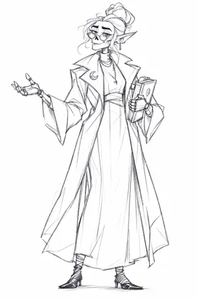
Headmaster
Headmaster voice 6 sec
Welcome to our school. Make a claim, show your evidence, and explain how the two connect.
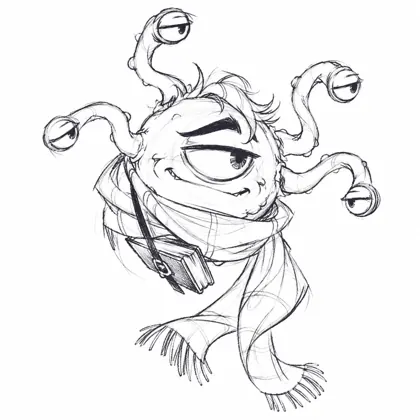
English
English voice 7 sec
Welcome to English. Crept and strode both describe movement, but they suggest very different feelings.
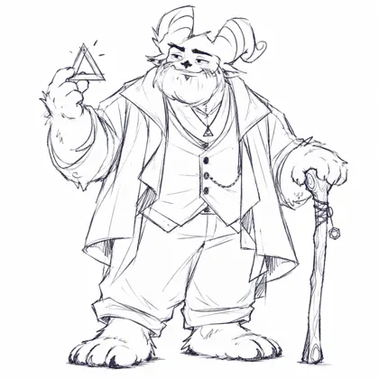
Math
Math voice 10 sec
Welcome to math. Double an input, then add three. Increasing the input by one increases the output by two.
Science
Science voice 8 sec
Welcome to science. Seeing brown spots is an observation. Explaining their cause takes evidence.
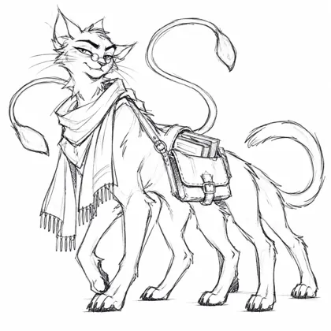
History
History voice 8 sec
Welcome to history. Before trusting an account, ask who created it, and what they could actually know.
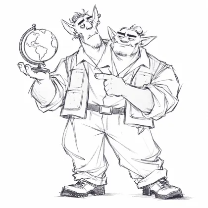
Geography
Ettin — Head A 7 sec
Welcome to geography. Map scale connects a distance on the page to a distance on the ground.
Ettin — Head B 6 sec
And contour lines show elevation. When their spacing gets closer, the slope gets steeper.
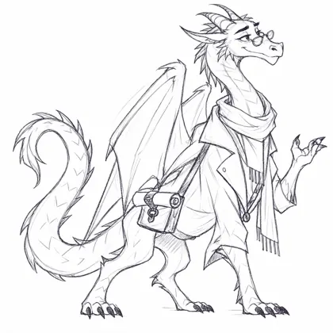
Language Arts
Language Arts voice 9 sec
Welcome to Language Arts. Your audience shapes your words. A friendly message sounds different from a formal request.
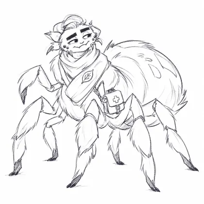
Health
Health voice 7 sec
Welcome to health. A popular claim is not proof. Check its source and the evidence behind it.
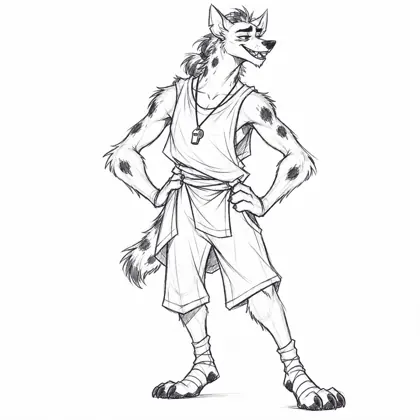
Physical Education
Physical Education voice 10 sec
Welcome to physical education. Different exercises train different skills. Today, we'll connect each exercise to its purpose.
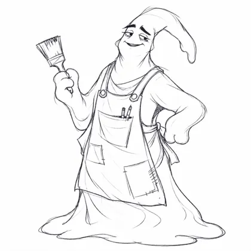
Art
Art voice 8 sec
Welcome to art. A light shape against a dark background stands out. That difference is called contrast.
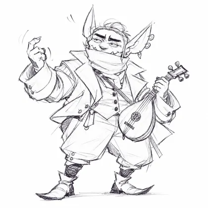
Music
Music voice 7 sec
Welcome to music. Pitch tells us how high a sound is; timbre gives it its distinctive character.
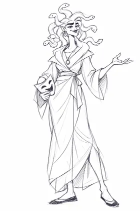
Drama
Drama voice 8 sec
Welcome to drama. The same words can express different intentions. Listen to how emphasis changes a line.
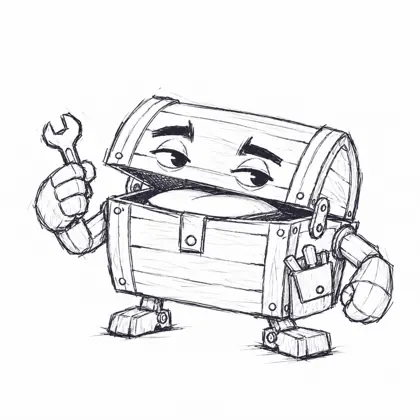
Technology
Technology voice 8 sec
Welcome to technology. An algorithm is an ordered set of instructions. Change the order, and the result can change.
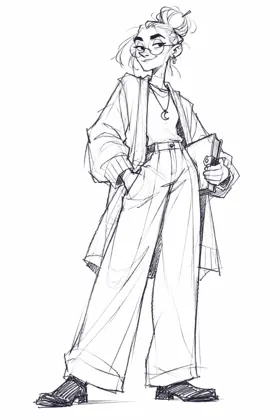
Student
Student voice study planned
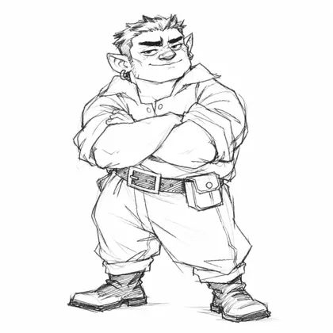
Student
Student voice study planned
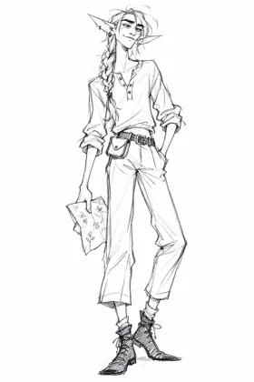
Student
Student voice study planned
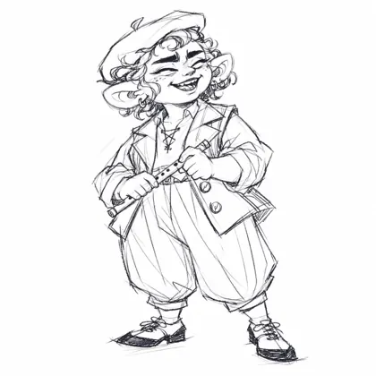
Student
Student voice study planned
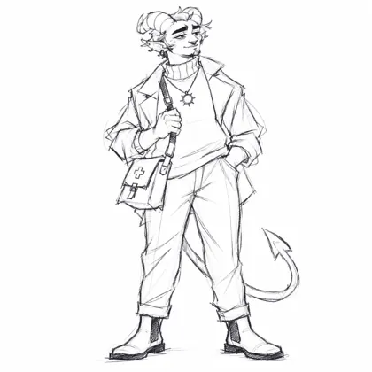
Student
Student voice study planned
Review the teacher from all sides in Sketchfab. His silhouette, costume, material treatment and gesture will test the character rules.
Model review pending
Interactive 3D model review to follow.
One beautiful corner brings environment, lighting, materials, interface and feedback into the same composition.
Explore the 3D rehearsal nook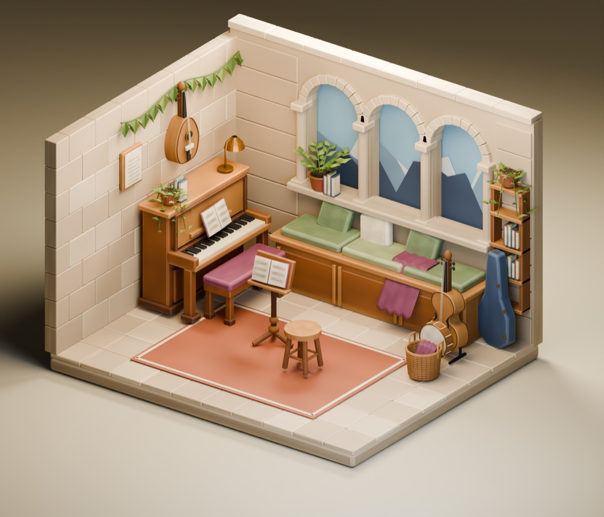